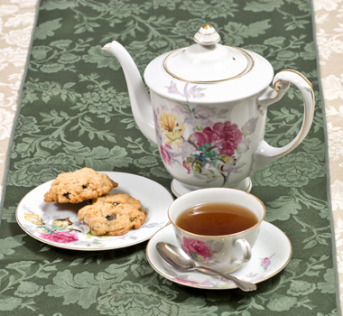

～ましょうか
| Polite | 持ちましょうか |
|---|---|
| Casual | 持とうか |
Same meaning: "shall I carry it?". Only the politeness changes.

YouTube · video
お箸、お付けしましょうか？
"Would you like chopsticks?" [at the register]
ましょうか means shall I or shall we: you offer to do something, or suggest doing it together.
Swap ます for ましょうか. On this card, it's the extra polite shop version: お付けします (I'll add some) → お付けしましょうか. It answers "Do you want this?" before the customer has to ask.
Casual: the よう form + か: 付けようか, 持とうか. Without か, ましょう is just "let's".
Examples
A coworker is carrying a heavy box.
持ちましょうか。
"Shall I carry that?"
持ちます → 持ちましょうか.
PoliteYour friend looks cold.
窓、閉めようか？
"Want me to close the window?"
Casual: 閉める → 閉めよう + か.
CasualIt's getting late at a meeting.
じゃあ、帰りましょうか。
"Well, shall we head home?"
PolitePlanning dinner with a friend.
何食べようか。
"What should we eat?"
With a question word: "what shall we...?"
CasualWith and without
窓を閉めましょう。
"Let's close the window." A suggestion, already decided.
窓を閉めましょうか。
"Shall I close the window?" An offer: you ask first.
Sentence mining

YouTube · video
ふくろ、おわけしましょうか？
"Shall I bag these separately?"
Shop polite: お分けします (I'll split them up).

YouTube · video
ではではそのまま、え、南の風車行ってみましょうか。
"Well then, shall we go on to the south windmill?"
行ってみます (go and see) → 行ってみましょうか.

YouTube · video
なんか食べ歩き、食べて、ちょっとこの市場を歩いてみましょうか。
"Shall we eat as we go and walk around this market a bit?"

YouTube · video
で、ま、日中はね、早速、え、冒険というか、え、荷物探し行きましょうか。
"So, for the daytime, shall we head out on an adventure, or a supply hunt really?"

Core deck Core
お茶を入れましょうか。
"Shall I make some tea?"
入れます → 入れましょうか.
Core deck Core
何かお手伝いしましょうか。
"Is there anything I can help with?"

Source unknown No source
楽しいね。弓は、そこで作っちゃおうか。
"This is fun. Shall we make the bow there?"
作っちゃう (go ahead and make) → 作っちゃおうか.

Source unknown No source
で、え、この辺りをぐるっと回ってみようか。
"So, shall we take a look around here?"
回ってみる → 回ってみようか.